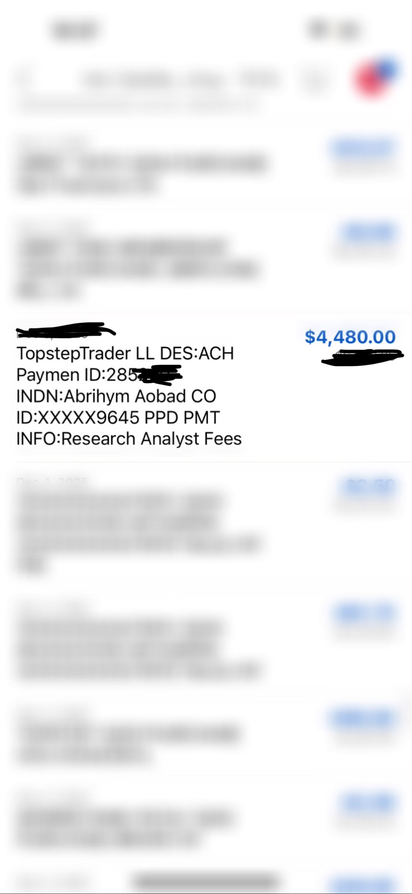
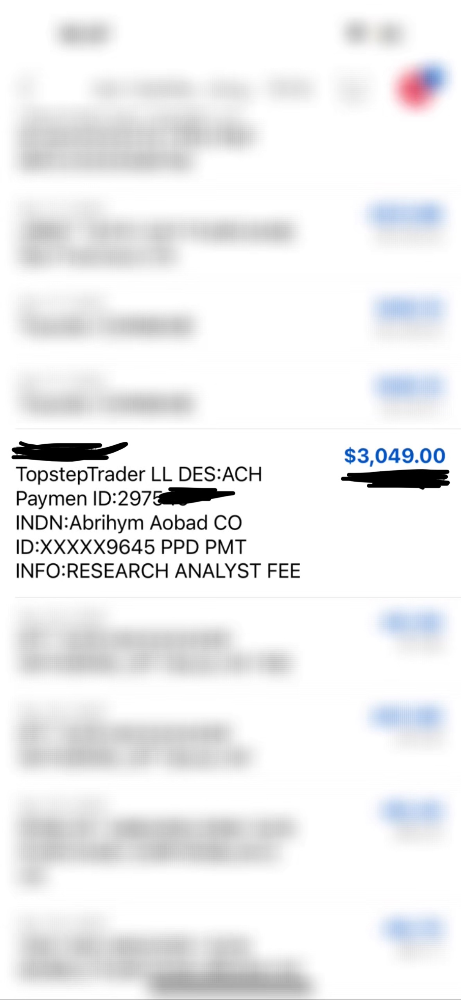
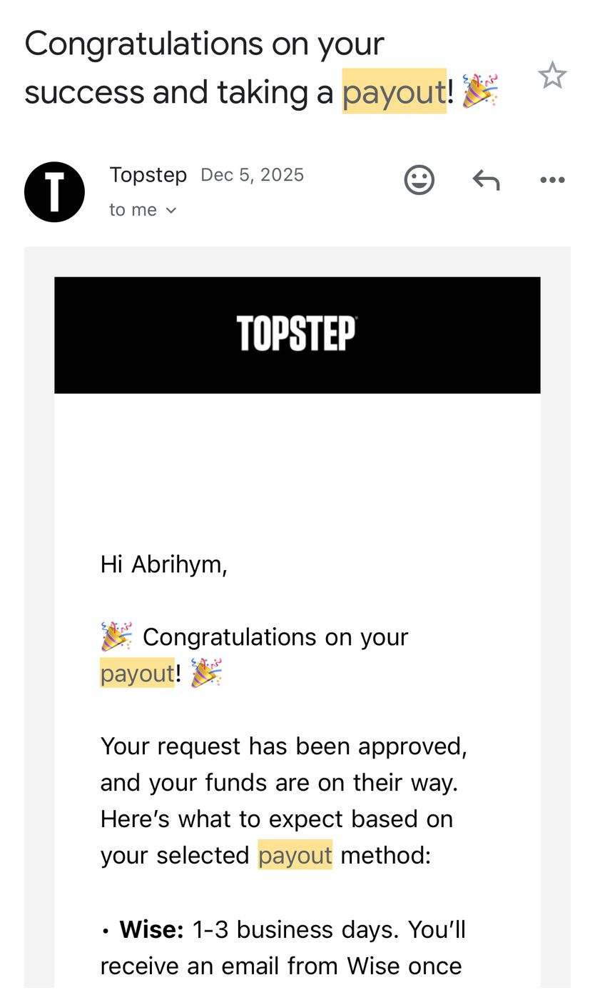
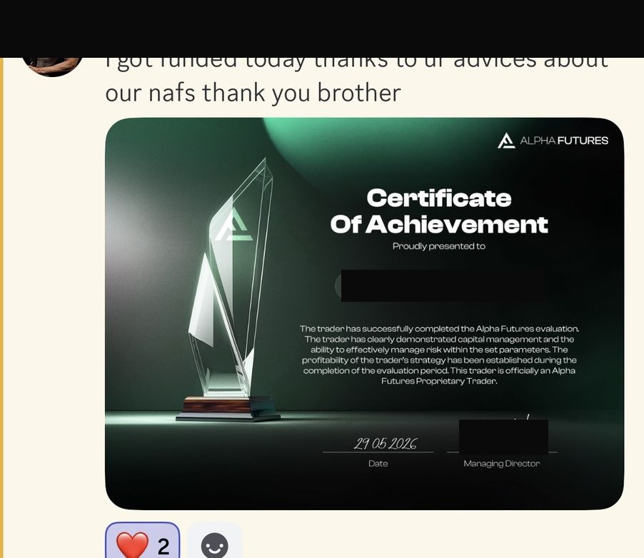
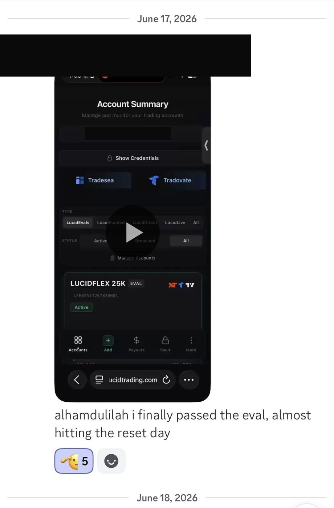
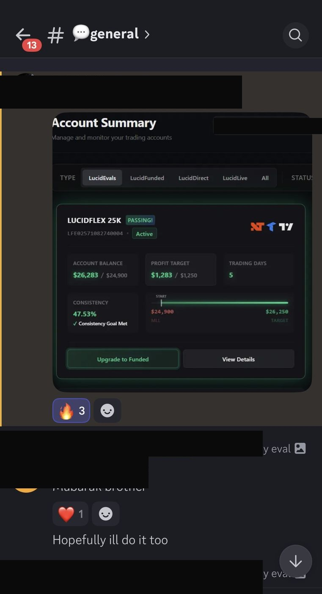
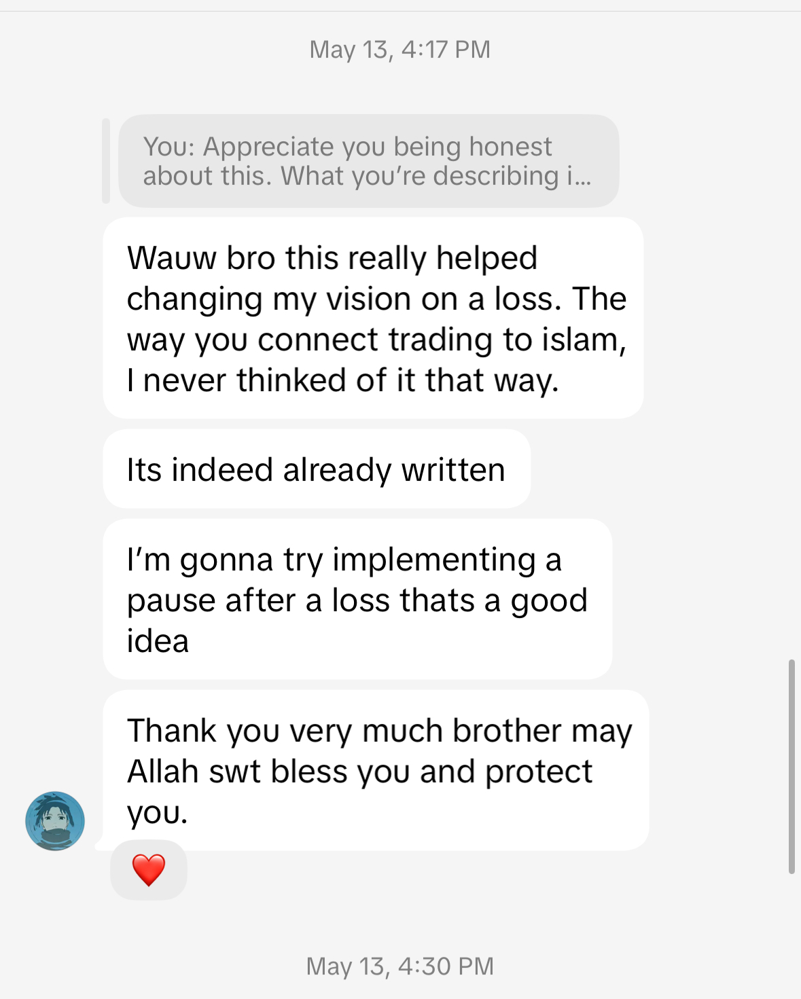
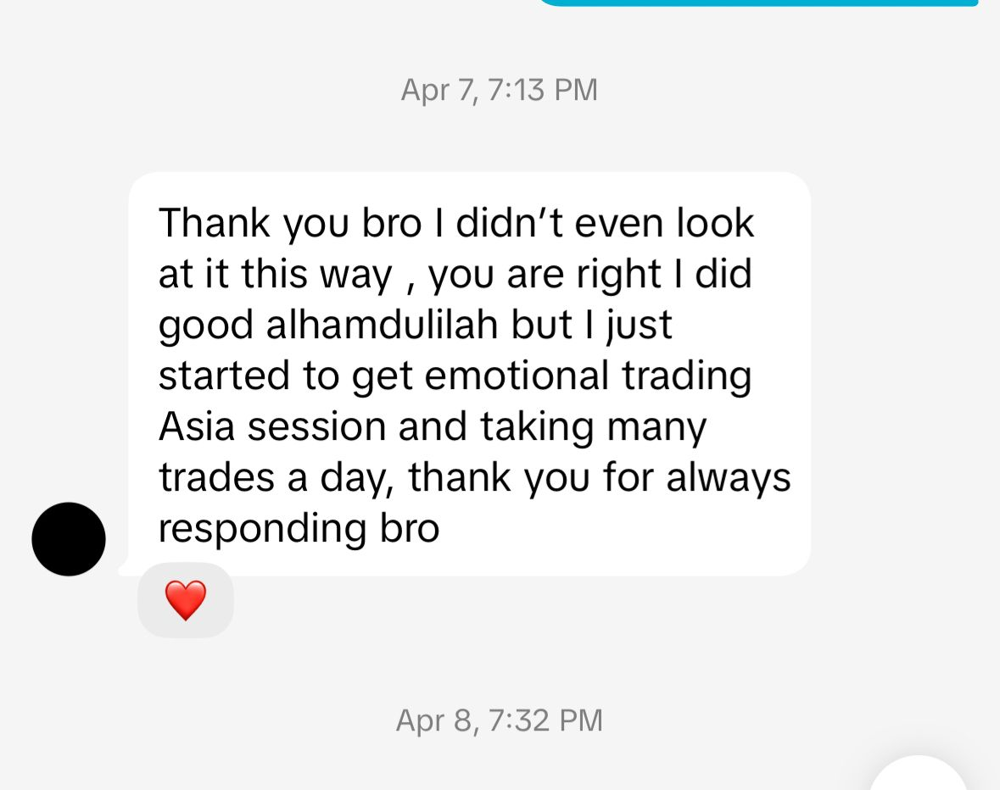
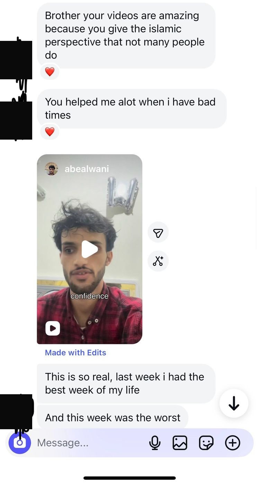

My story
I blew accounts for years and never made a dollar — until I came back to my deen.

I'm Abrihym Aobad. For years I blew account after account and never made a single dollar. It wasn't for lack of information — I had more strategies, more indicators, more screen time than I can count. I kept losing anyway. Eventually I lost everything, and what was left wasn't just an empty account. It was an empty me.


Then I stepped away — and reconnected with my deen.
After losing everything and feeling empty, I took a break from all of it: the charts, the noise, the chase. I went back to my deen — and it was in that connection that I finally understood why I kept losing no matter how much I learned. The problem was never the strategy. It was the self behind it.
So I started to implement what Islam had been teaching all along — through the Qur'an, through the hadith, through the science of the nafs. Patience. Restraint. Sincerity. Gratitude. I stopped trying to become a better trader and started becoming a governed one. And that's when everything changed.
Then the payouts started — alhamdulillah.
I don't share these to boast. I share them because for years this was the proof I never had: that the shift was real — in the account, not just in my head. Same markets, same charts — a different self placing the trades.






Then other people started sending me theirs.
These aren't mine. They're screenshots traders in the community have sent me — unprompted — after applying the same framework. I'm not the only one this works for.






Names and handles in these screenshots have been removed. Individual results. Nothing here is a promise of profit.